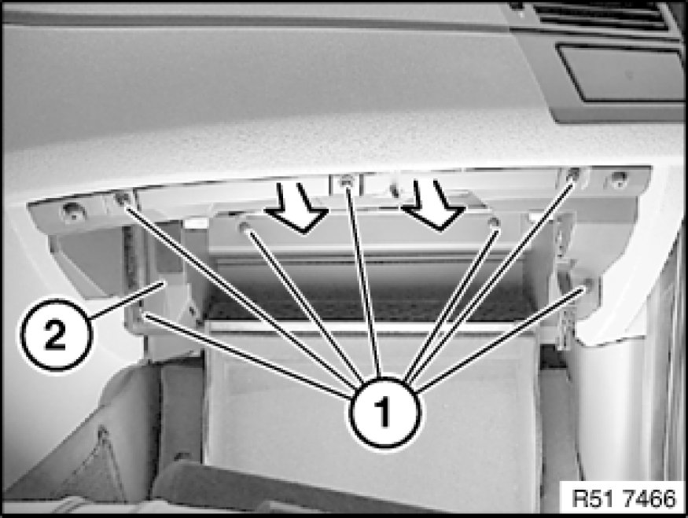

51 16 366 Removing and Installing Right Glovebox With Housing
51 16 366 - Removing and installing right glovebox with housing
Open glovebox.
Lever glovebox light (1) out of opening (2).
Disconnect plug connection and remove glovebox light (1).

Unclip pin (1) from retaining strap (2).
Unclip pin (1) from shock absorber (2).

Release screws (1).
Pull off glovebox (2) with insert towards front and position downwards.
Feed cables (1) and (2) out of guides on glovebox carrier (3).

Disconnect plug connections (1) and (2).